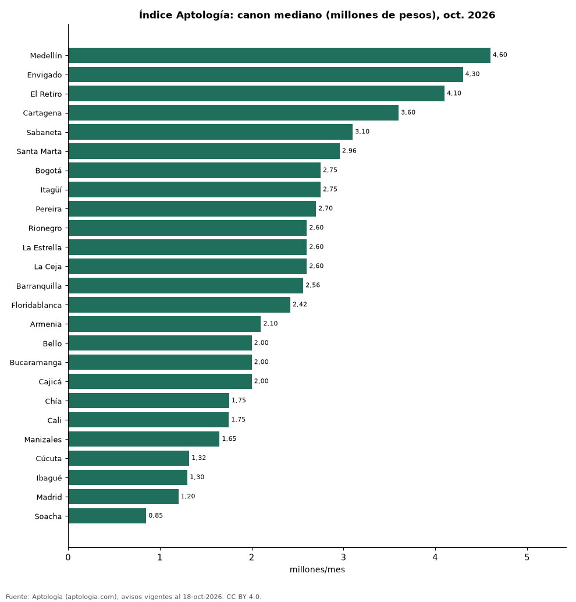

Índice Aptología del arriendo, octubre de 2026: canon mediano de apartamentos en 25 ciudades de Colombia
Estudio con datos abiertos (CC BY 4.0). Versión original: https://github.com/elbroker/aptologia-datos/tree/main/estudios/indice-aptologia-del-arriendo-ciudades-colombia-octubre-2026 · DOI: 10.5281/zenodo.23462216
El Índice Aptología del arriendo de octubre de 2026 marca un canon mediano nacional de 3.420.362 pesos al mes para un apartamento en Colombia (promedio de 25 ciudades ponderado por avisos). La ciudad más cara es Medellín (4.600.000 pesos) y la más barata Soacha (850.000 pesos); Bogotá marca 2.750.000 pesos.
Resumen: usamos la última foto comparable de octubre de 25 ciudades con 300 avisos o más (103.172 avisos).
Actualizado: 18 de octubre de 2026 (datos del 18 de octubre de 2026) · Próxima actualización: mensual.

Resumen
| Indicador | Valor |
|---|---|
| Índice nacional (octubre 2026) | 3.420.362 pesos |
| Más cara | Medellín: 4.600.000 pesos |
| Más barata | Soacha: 850.000 pesos |
| Bogotá | 2.750.000 pesos |
Ciudades
| Ciudad | Canon mediano | P25–P75 | Avisos | Foto del |
|---|---|---|---|---|
| Medellín | 4.600.000 pesos | 3.350.000 pesos – 6.650.000 pesos | 32.263 | 2026-10-18 |
| Envigado | 4.300.000 pesos | 3.600.000 pesos – 5.150.000 pesos | 9.797 | 2026-10-17 |
| El Retiro | 4.100.000 pesos | 3.300.000 pesos – 5.000.000 pesos | 679 | 2026-10-17 |
| Cartagena | 3.600.000 pesos | 2.500.000 pesos – 5.240.250 pesos | 2.468 | 2026-10-17 |
| Sabaneta | 3.100.000 pesos | 2.600.000 pesos – 3.500.000 pesos | 5.385 | 2026-10-18 |
| Santa Marta | 2.958.500 pesos | 2.200.000 pesos – 4.500.000 pesos | 818 | 2026-10-17 |
| Bogotá | 2.750.000 pesos | 1.700.000 pesos – 5.800.000 pesos | 28.097 | 2026-10-18 |
| Itagüí | 2.750.000 pesos | 2.300.000 pesos – 3.200.000 pesos | 1.185 | 2026-10-17 |
| Pereira | 2.700.000 pesos | 2.000.000 pesos – 3.800.000 pesos | 2.080 | 2026-10-17 |
| Rionegro | 2.600.000 pesos | 1.800.000 pesos – 3.100.000 pesos | 4.702 | 2026-10-17 |
| La Estrella | 2.600.000 pesos | 2.300.000 pesos – 2.850.000 pesos | 645 | 2026-10-17 |
| La Ceja | 2.600.000 pesos | 2.049.432 pesos – 3.000.000 pesos | 451 | 2026-10-17 |
| Barranquilla | 2.561.500 pesos | 1.700.000 pesos – 3.800.000 pesos | 5.654 | 2026-10-17 |
| Floridablanca | 2.420.000 pesos | 1.800.000 pesos – 2.900.000 pesos | 433 | 2026-10-17 |
| Armenia | 2.100.000 pesos | 1.500.000 pesos – 2.792.500 pesos | 512 | 2026-10-17 |
| Bello | 2.000.000 pesos | 1.750.000 pesos – 2.500.000 pesos | 1.505 | 2026-10-17 |
| Bucaramanga | 2.000.000 pesos | 1.400.000 pesos – 3.000.000 pesos | 617 | 2026-10-17 |
| Cajicá | 2.000.000 pesos | 1.680.000 pesos – 2.862.500 pesos | 420 | 2026-10-17 |
| Chía | 1.754.250 pesos | 1.450.000 pesos – 2.500.000 pesos | 620 | 2026-10-17 |
| Cali | 1.750.000 pesos | 1.200.000 pesos – 3.300.000 pesos | 2.772 | 2026-10-17 |
| Manizales | 1.650.000 pesos | 1.221.635 pesos – 2.700.000 pesos | 549 | 2026-10-17 |
| Cúcuta | 1.319.000 pesos | 1.000.000 pesos – 1.828.500 pesos | 524 | 2026-10-17 |
| Ibagué | 1.300.000 pesos | 987.300 pesos – 1.675.000 pesos | 359 | 2026-10-17 |
| Madrid | 1.200.000 pesos | 1.000.000 pesos – 1.257.000 pesos | 333 | 2026-10-17 |
| Soacha | 850.000 pesos | 750.000 pesos – 950.000 pesos | 304 | 2026-10-17 |
Apartamentos en arriendo, todos los tamaños; mediana del canon pedido.
Preguntas frecuentes
¿Cuánto cuesta en promedio arrendar un apartamento en Colombia? El Índice Aptología de octubre de 2026 da un canon mediano de 3.420.362 pesos al mes.
¿Es comparable con meses anteriores? Todavía no: la serie de cada ciudad solo es comparable desde el 15 de octubre de 2026; este es el primer punto del índice.
Metodología
- Fuente: exportes nocturnos de la base de datos de Aptología (aptologia.com) del 18 de octubre de 2026: avisos vigentes de vivienda en portales inmobiliarios de 13 países, recogidos por Aptología y vistos en línea entre el 11 y el 18 de octubre de 2026. Corte: 18 de octubre de 2026.
- Depuración: se eliminan duplicados exactos (misma ciudad, zona, tipo, precio, moneda, área, habitaciones y baños) y los precios fuera del percentil 1–99 de cada país, operación, moneda y tipo; el precio por m² usa solo avisos con área declarada entre 12 y 2.000 m² y también se recorta al P1–P99.
- Qué se mide: precios pedidos (publicados), no precios de cierre. En arriendo, el canon mensual sin administración, gastos comunes ni condominio.
- Muestra mínima: cada cifra publicada se apoya en al menos 30 avisos; las celdas con menos se omiten.
- Colombia: Precios en pesos colombianos, sin conversión de moneda.
- Índice: tabla indice_ciudad_mes (última foto comparable del mes por ciudad, ciudades con 300 avisos o más); índice nacional = promedio de medianas ponderado por avisos. No es una tendencia: la serie solo es comparable desde el 15-oct-2026 (indice_serie_desde).
- Limitaciones: la cobertura depende de los portales que recorre Aptología en cada país y es mayor en las ciudades grandes y en los segmentos medio-alto y alto; el área es la que declara el aviso, sin verificar; los nombres de zona vienen de los portales.
- Privacidad: solo se publican agregados; no se publica ningún dato personal, enlace a avisos ni nombre de anunciante.
- Datos abiertos: datos.csv, licencia CC BY 4.0.
Cómo citar
Pinzón Pineda, D. M. (2026). Índice Aptología del arriendo, octubre de 2026: canon mediano de apartamentos en 25 ciudades de Colombia. Aptología (aptologia.com). https://github.com/elbroker/aptologia-datos/tree/main/estudios/indice-aptologia-del-arriendo-ciudades-colombia-octubre-2026. Datos: datos.csv, licencia CC BY 4.0.